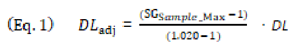
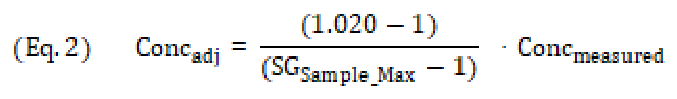

Technical Documents · TD2021CG/LH
Edition v1.0, 2021 (version 1.0) · effective 1 April 2021 · superseded
Retrieved on 25 November 2026 from https://www.wada-ama.org/sites/default/files/2022-01/td2021cg-lh_final_eng_0.pdf
Editions: v1.0, 2027 (current) · v1.0, 2021 · v1.0, 2019 · v1.0, 2018 · v1.0, 2017
p. 1
ANALYSIS, REPORTING & MANAGEMENT of URINARY HUMAN CHORIONIC GONADOTROPHIN (hCG) and LUTEINIZING HORMONE (LH) FINDINGS IN MALE ATHLETES
The purpose of this Technical Document (TD) is to ensure a harmonized approach in the reporting and management of elevated urinary concentrations of human Chorionic Gonadotrophin (hCG) and Luteinizing Hormone (LH).
The finding of the α/β heterodimer of hCG in the urine of male Athletes at concentrations greater than the established Decision Limit (DL) may be an indicator of hCG Use for doping purposes. However, due to the association of elevated urinary hCG with pathology, such as testicular cancer, consideration must be given to possible causes, other than doping, which can produce elevated concentrations of heterodimeric hCG in urine Samples from male Athletes.
[Comment: The α/β heterodimer of hCG includes the intact α/β heterodimer as well as the 'nicked' α/β heterodimer, in which the β-subunit is (usually) cleaved between residues 47 and 48. Although cleaved, the α and β-subunits in the nicked hCG are held together by non-covalent bonds.
Immunoassays developed against 'intact hCG' typically measure these two forms of the α/β heterodimeric hCG molecule. In contrast, assays for 'total hCG' measure other molecular forms of hCG (e.g. α- and β- subunits or degradation fragments such as the β-core fragment) in addition to the α/β heterodimer.]
Elevated concentrations of total LH in urine of male Athletes may also be an indication of the administration of this Prohibited Substance for doping purposes or of the Use of other Prohibited Substances that induce the release of endogenous LH, such as gonadotropin-releasing factors (i.e. gonadotropin-releasing hormone (GnRH) and its synthetic analogs) or estrogen blockers (anti-estrogens, aromatase inhibitors). On the other hand, suppressed urinary concentrations of LH in male Athletes may be an indication of, or corroborative finding for, the Use of androgens.
[Comment: Total LH includes the α/β LH heterodimer as well as the dissociated β-subunit and their degradation products.]
The objective of this TD is to assist Laboratories with reporting analytical findings for hCG and LH and aid Anti-Doping Organizations (ADOs) to determine whether an anti-doping rule violation (ADRV) has occurred.
p. 2
1.0 Introduction
- hCG and LH are prohibited in male Athletes only;
- hCG and LH are both heterodimeric proteins comprising two (2) polypeptide chains, a common α-subunit and a unique β-subunit (hCGβ, LHβ). Only the α/β heterodimer has biological activity, which is determined by the hormone-specific β-subunit;
- Both hCG and LH occur in urine in different molecular forms, including the intact and nicked α/β heterodimers as well as the dissociated α- and β-subunits and their degradation products (e.g. the β-core fragments, nicked products, etc.);
- In men, hCG and LH stimulate production of testosterone by Leydig cells by binding to and activating CG/LH receptors;
- The heterodimeric hCG is either undetectable or found at very low levels (usually below 2 IU/L) in urine from healthy, non-doping males. However, elevated levels of heterodimeric hCG, free hCGβ, hCGβ-core fragment are produced by certain malignant tumors, especially in cases of testicular cancer. Heterodimeric hCG may also be produced by extra-testicular germ cell tumors. In addition, hCGβ may be produced by various non-trophoblastic cancers;
- Endogenous LH is normally detectable in urine from healthy men. LH has a shorter halftime in circulation than hCG. Circulating LH is subject to negative feedback by the production of endogenous testosterone or the administration of androgens.
2.0 Pre-analytical Procedure
- Before aliquoting for analysis, the urine Sample should be homogenized in the Sample bottle;
- Aliquots taken for analysis should be analyzed immediately. However, if necessary, Aliquots may be stored refrigerated for up to seven (7) days until analysis. Aliquots should not be frozen;
- If stored refrigerated, Aliquots should be re-suspended after removal from storage (e.g. by pipetting, vortexing or shaking). Aliquots should be allowed to reach room temperature before being loaded into the instrument for analysis;
- In case of a Presumptive Adverse Analytical Finding (PAAF), "A" Samples stored at -20 °C should be subjected to the Confirmation Procedure (CP) as soon as possible;
p. 3
- "B" Samples associated with an Adverse Analytical Finding (AAF) for hCG in the "A" Sample should be subjected to the CP or transferred to deep freezing storage (-70 °C or less) as soon as possible until analysis.
3.0 Analytical Testing Strategy
3.1 Analytical Testing for hCG
3.1.1 Initial Testing Procedure (ITP)
- For the ITP, assays (immunoassays, chromatographic-mass spectrometric assays[1]), which are specific for either the α/β heterodimer of hCG or for 'total hCG' may be used;
[Comment: Men with "familial hCG", an apparently physiological and non-pathological anomaly of hCG secretion, have consistently elevated concentrations of hCGβ in serum and urine. This may cause a positive finding if an assay for "total" hCG is used. Therefore, the Laboratory may also consider measuring total hCG only as an initial pre-screening procedure for practical reasons (e.g. the lack of an automated assay for heterodimeric hCG), and subsequently subjecting any Sample with a suspicious result (> 5.00 IU/L) to an ITP using an assay specific for heterodimeric hCG].
- The Laboratory shall use at least one quality control (QC) sample at levels close to 5 IU/L (immunoassays) or 2 IU/L (chromatographic-mass spectrometric assays). The consistency of the hCG measurements of the QC shall be monitored through the use of QC-charts.
[Comment: It is recommended that the QC samples be prepared in the matrix of analysis (urine), aliquoted and stored deep frozen (-70 °C or less) until use.]
3.1.2 Confirmation Procedure (CP)
- For the CP(s), Laboratories shall apply an assay validated to be as Fit-for-Purpose to detect and quantify specifically the α/β heterodimer of hCG (immunoassay or chromatographic-mass spectrometric assay[1]). The same assay (immunoassay or LCMS/MS assay) shall be used for both the "A" and the "B" Sample CP;
[Comment: Fit-for-Purpose immunoassays for quantification of hCG α/β heterodimer in urine include, for example, the Roche hCG STAT, DELFIA and the Siemens EXL Dimension assays. Nevertheless, the Laboratory shall validate the assay and have it incorporated within its Scope of ISO/IEC 17025 Accreditation before application to the analysis of Samples.]
- The acceptance values for the parameters of α/β heterodimeric hCG assay performance, as determined during CP Test Method validation, are specified in the table below:
p. 4
| Validation Parameter. | Acceptance Criterion.Immunoassays | Acceptance Criterion.LC-MS/MS |
|---|---|---|
| sr (Repeatability) | ≤ 10 % (at 5.00 IU/L) | ≤ 10 % (at 2.00 IU/L) |
| sw (Intermediate Precision) | ≤ 15 % (at 5.00 IU/L) | ≤ 15 % (at 2.00 IU/L) |
| LOQ * (Limit of Quantification) | ≤ 3.00 IU/L | ≤ 0.50 IU/L |
| uc_Max (%) (Maximum Combined Standard Uncertainty) | 20 % (at 5.00 IU/L) | 20 % (at 2.00 IU/L) |
- LOQ is defined as the lowest hCG concentration in urine meeting the specified criteria for uc_Max.
- If the Laboratory uses an immunoassay specific for total hCG for the ITP, then an assay specific for the α/β heterodimer of hCG (LC-MS/MS or an immunoassay) shall be used for the CP(s);
- If the Laboratory uses immunoassays specific for the α/β heterodimer of hCG for both the ITP and the CP(s), then the confirmation immunoassay shall be different from the immunoassay applied for the ITP;
- If the Laboratory uses an LC-MS/MS-based assay specific for the α/β heterodimer of hCG for the ITP, then the same LC-MS/MS-based assay or an immunoassay (also specific for the α/β heterodimer of hCG) may be used for the CP(s);
- Laboratories that do not have the analytical capacity to perform the CP(s) for hCG with a (second) immunoassay specific for the α/β heterodimer of hCG or with an LC-MS/MS assay shall have, upon consultation with the responsible Testing Authority, the Sample shipped to and analyzed by another Laboratory that has such analytical capacity;
[Comment: A second immunoassay specific for the α/β heterodimer of hCG is needed for the CP(s) only if the Laboratory uses an immunoassay specific for the α/β heterodimer of hCG for the ITP and it does not have a validated LC-MS/MS assay.]
[Comment: For further guidance, refer to the WADA Guidelines on Conducting and Reporting Subcontracted Analysis and Further Analysis for Doping Control].
p. 5
- The Laboratory shall use a negative (concentration less than (<) the corresponding DL) and a positive (6 - 15 IU/L) urine QC sample. The consistency of the hCG measurements of the QCP shall be monitored through the use of QC-charts;
- For Samples producing a PAAF for hCG (α/β heterodimer or 'total' hCG, as applicable), the "A" Sample CP should be performed as soon as possible. Alternatively, the remainder of the "A" Sample and the "B" Sample should be deep frozen (at -70 °C or less) immediately until analysis;
- For both "A" and "B" CP, three (3) Sample Aliquots shall be measured, except when there is limited Sample volume, in which case a lower maximum number of replicates may be used.
3.2 Analytical Testing for LH
3.2.1 Initial Testing Procedure (ITP)
- Laboratories should determine the concentrations of total LH in urine during the ITP by applying an assay for total LH, which is capable of measuring the total content of LH immunoreactivity, i.e. capable of detecting the α/β heterodimer as well as the free β-chain and the β-core fragment (e.g. Siemens Immulite, DELFIA);
- The Laboratory shall use at least one QC sample with total LH concentration between 5 - 50 IU/L. The consistency of the total LH measurements of the QC shall be monitored through the use of QC-charts.
[Comment: It is recommended that the QC samples be prepared in the matrix of analysis (urine), aliquoted and stored deep frozen (-70 °C or less) until use.]
3.2.2 Confirmation Procedure (CP)
- If the ITP produces a PAAF for LH, the Laboratory shall test the Sample for the presence of gonadotropin-releasing factors (e.g. buserelin, gonadorelin, leuprorelin), anti-estrogenic substances and aromatase inhibitors.
[Comment: Analysis for anti-estrogenic substances and aromatase inhibitors shall be part of the Laboratory's standard Analytical Testing menu. Analysis for gonadotropin-releasing factors may not be part of the Laboratory's routine Analytical Testing menu; however, Laboratories shall have analytical capacity to apply this method as a CP for elevated LH findings.]
p. 6
4.0 Interpretation and Reporting of Results
4.1 hCG results
4.1.1 ITP Results
i. Presumptive Adverse Analytical Finding (PAAF)
- The ITP will produce a PAAF for hCG, if the concentration of hCG (either the hCG-α/β heterodimer or 'total' hCG) in the Sample is greater than (>) 5.00 IU/L for immunoassays, or greater than (>) 2.00 IU/L for LC-MS/MS assays.
[Comment: In accordance with the International Standard for Laboratories (ISL)[2], when there is a PAAF for hCG, the Laboratory may contact the Testing Authority (or Results Management Authority, if different), in writing, to enquire whether an approved Therapeutic Use Exemption (TUE) exists for hCG. The Laboratory should provide the hCG concentration determined from the ITP. However, this is not a mandatory requirement for the Laboratory; the Laboratory may proceed, at its discretion, to confirm the PAAF.
The instruction by the Testing Authority (or Results Management Authority, if different) on whether the Laboratory shall proceed or not with the confirmation based on an approved TUE shall be provided to the Laboratory in writing. If not proceeding with the confirmation, then the Testing Authority (or Results Management Authority, if different) shall provide WADA with a copy of the approved TUE or the associated TUE number if the TUE has been submitted into ADAMS.]
ii. Negative Finding
- The Laboratory should consider the result for hCG as a Negative Finding when the ITP produces a result for the hCG-α/β heterodimer or 'total hCG', as applicable, which is less than or equal to (≤) 5.00 IU/L for immunoassays, or less than or equal to (≤) 2.00 IU/L for LC-MS/MS assays.
[Comment: The Laboratory should report these results as Negative Findings unless the Laboratory, based on ITP method validation data, concludes that the result should be considered as a PAAF and subjected to a CP].
4.1.2 CP Results
i. Adverse Analytical Finding (AAF)
- The Laboratory shall report an AAF for hCG if the CP confirms the presence of the hCGα/β heterodimer at concentrations greater than (>) the DL of 5.00 IU/L (immunoassays) or 2.00 IU/L (LC-MS/MS).
- For urine Samples with measured values of specific gravity (SGSample) greater than (>) 1.018, the DL shall be adjusted.
p. 7
[Comment: For urine Samples with SGSample > 1.018, the DL for hCG shall be adjusted according to Eq. 1:
\[( E _ { q } , 1 ) \ \ D L _ { \text {adj} } = \frac { ( \mathbb { S } _ { \text {sample} , \max } - 1 ) } { ( 1 0 2 0 - 1 ) } \ \cdot \ D L\]

where DL = 5.00 IU/L for immunoassays and 2.00 IU/L for LC-MS/MS.
Refer to the effective TD DL[3] for instructions on calculating SGSample_Max.
The DLadj shall be expressed truncated to three significant figures (e.g. a DLadj of 5.326 shall be expressed as 5.32; trailing zeros (0) shall be considered as significant figures, e.g. 5.30; 6.00).]
- When reporting an AAF for hCG, the Laboratory Test Report shall include the mean concentration of the hCG-α/β heterodimer (expressed in international units per litre (IU/L) truncated to three (3) significant figures) of the replicate determinations performed during the CP as well as the relative combined standard uncertainty uc (%) at values close to the DL as determined by the Laboratory during method validation;
- In case of an AAF for hCG, a comment shall be added to the Test Report recommending the ADO to advise the Athlete to undergo clinical investigations to exclude any pathological cause for the elevated urinary hCG (see Annex 1).
ii. Negative Finding
- The Laboratory shall report the confirmation result for hCG as a Negative Finding when the CP produces a result for the hCG-α/β heterodimer, which is less than or equal to (≤) 5.00 IU/L for immunoassays, or less than or equal to (≤) 2.00 IU/L for LC-MS/MS assays, or less than or equal to (≤) the adjusted DL value if the SG > 1.018;
- A CP Negative Finding for the hCG-α/β heterodimer is associated with a PAAF from the ITP for either 'total hCG' or intact hCG, as applicable. Therefore, in these cases the Laboratory shall also make a comment on the Test Report recommending the ADO to advise the Athlete to undergo clinical investigations to exclude any pathological cause for the elevated urinary hCG (see Annex 1).
p. 8
4.2 LH results
For urine Samples with SGSample > 1.018, LH concentrations shall be adjusted to SG = 1.020.
[Comment: For urine Samples with values of SGSample > 1.018, the LH concentration in the Sample shall be adjusted according to Eq. 2:
\[\text {Conc} _ { \text {adj} } = \frac { ( 1 . 0 2 - 1 ) } { ( S G _ { \text {sample_Max} } - 1 ) } \ \cdot \text {Conc} _ { \text {measured} }\]

Refer to the effective TD DL[3] for instructions on calculating SGSample_Max].
4.2.1 ITP Results
i. Presumptive Adverse Analytical Finding (PAAF)
- The Laboratory shall conclude a PAAF for LH when the measured concentration of total LH in the ITP (after adjustment if urine SG > 1.018) is greater than (>) 60.0 IU/L when using the Immulite assay or greater than (>) 40.0 IU/L when applying the DELFIA assay;
- The Laboratory shall report in ADAMS the measured concentration of total LH, expressed truncated to three (3) significant figures (trailing zeros (0) shall be considered as significant figures, e.g. 45.0; 110).
ii. Negative Finding
- The Laboratory should consider the result for LH as a Negative Finding when the measured concentration of total LH in the ITP (after adjustment if urine SG > 1.018) is less than or equal to (≤) 60.0 IU/L when using the Immulite assay or less than or equal to (≤) 40.0 IU/L when applying the DELFIA assay;
- In cases when LH is not detectable in the Sample, the Laboratory shall report in ADAMS that "the concentration of LH was less than the Limit of Detection (LOD)" and specify the applicable LOD.
4.2.2 CP Results
i. Adverse Analytical Finding (AAF)
- When there is a PAAF for LH, and tests are performed to detect the presence of gonadotropin-releasing factors, anti-estrogenic substances and aromatase inhibitors, the Laboratory shall report an AAF if any one of these Prohibited Substances is confirmed in the Sample (in accordance with the TD IDCR[4]). In addition, the Laboratory shall report the estimated concentration of LH (expressed truncated to three (3) significant figures).
p. 9
ii. Atypical Finding (ATF)
- When there is a PAAF for LH, and tests performed to detect the presence of gonadotropin-releasing factors, anti-estrogenic substances and aromatase inhibitors produce negative results, the Laboratory shall report the Sample as an ATF. The Laboratory shall report the estimated concentration of LH (expressed truncated to three (3) significant figures).
5.0 Results Management
5.1 hCG findings
- When a Sample is reported as an AAF for hCG or as a Negative Finding for a non-confirmed PAAF for intact or total hCG, as applicable (i.e. an initial PAAF for 'total' or 'intact' hCG is followed by a negative confirmation result for 'intact' hCG), the ADO should alert the Athlete and advise that clinical investigations be performed within a reasonable time frame to exclude pathological causes of the elevated urinary hCG concentrations (see Annex 1). No Provisional Suspension shall be imposed on the Athlete for the AAF during the course of the clinical investigations. The ADO should advise WADA when clinical investigations are conducted on an Athlete;
[Comment: Cases of a non-confirmed PAAF for α/β heterodimeric ('intact') or 'total' hCG may be caused by hCG degradation in urine following Sample collection. However, a non-confirmed PAAF for 'total' hCG may also be related to a pathological cause, since most cases of testicular cancer are associated with elevated free hCGβ and hCGβ-core fragment in urine.
An AAF or non-confirmed PAAF for the α/β heterodimeric hCG does not exclude either the possibility of a pathological cause, since testicular cancer is also linked to elevated serum and urine concentrations of heterodimeric hCG. In such cases, it is a responsibility of the Athlete to provide medical information or clinical evidence demonstrating that the AAF for heterodimeric hCG is the result of a pathological condition.]
- When a Sample is reported as an AAF or a confirmed Negative Finding for hCG (associated with a PAAF for intact or total hCG, as applicable), it is recommended that the ADO conducts at least one (1) follow-up no-notice test within a reasonable time frame (e.g. within 2 weeks) following the initial finding. If possible, the follow-up Sample should be analyzed at the same Laboratory and using the same assays that produced the initial finding. If a different Laboratory is to be used, at least the same confirmatory assay for hCG shall be applied;
- If no clinical evidence is provided or the clinical investigations determine that there is no pathological condition associated with the AAF, the results management process is followed as in the case for Use of other Prohibited Substance(s) or Prohibited Method(s). The results of p. 10 the follow-up Sample(s) should be considered when evaluating the initial findings and the clinical information;
[Comment: For example, a negative result for the follow up Sample is more consistent with prior Use of hCG and the absence of a pathological condition.]
- If medical information is provided by the Athlete to support the claim that the AAF is due to a physiological or pathological condition, such information shall be taken in to account and should lead the ADO to stop the result management process of the case as an ADRV.
5.2 LH findings
- If the presence of gonadotropin-releasing factors, anti-estrogenic substances or aromatase inhibitors is reported as an AAF, the results management process is followed, as in the case for Use of any other Prohibited Substance(s) or Prohibited Method(s);
- If an ATF for LH is reported (elevated total LH concentration with negative results for gonadotropin-releasing factors, anti-estrogens and aromatase inhibitors), the ADO should conduct at least one (1) follow-up no-notice test on the Athlete within a reasonable time frame (e.g. within 2 weeks) following the initial finding, unless the ADO has longitudinal data for the Athlete that indicates a follow-up is not warranted;
- The follow-up Sample should be preferably analyzed at a Laboratory that applies the same assay for total LH as the one used on the first Sample;
- The ADO should consider the results of longitudinal tests for LH in parallel with the evaluation of the longitudinal "steroid profile" of the Athlete. This evaluation should be done in consultation with an Athlete Passport Management Unit (APMU).
6.0 References
[1] Woldemariam GA and AW Butch. Immunoextraction-Tandem Mass Spectrometry Method for Measuring Intact Human Chorionic Gonadotropin, Free β-Subunit, and β-Subunit Core Fragment in Urine. Clin Chem 60: 1089-1097, 2014.
[2] The World Anti-Doping Code International Standard for Laboratories (ISL).
[3] WADA Technical Document TD DL. Decision Limits for the Confirmatory Quantification of Exogenous Threshold Substances by Chromatography-based Analytical Methods.
[4] WADA Technical Document TD IDCR. Minimum Criteria for Chromatographic-Mass Spectrometric Confirmation of the Identity of Analytes for Doping Control Purposes.
[Current versions of the WADA ISL and Technical Documents may be found at https://www.wada-ama.org/en/what-we-do/science-medical/laboratories ]
p. 11
Annex 1.
Medical Evaluation of a Case with Confirmed Positive hCG Test
An Adverse Analytical Finding (AAF) for hCG in a male Athlete should lead to investigation of a pathological, non-doping cause before charging the Athlete with an anti-doping rule violation (ADRV) for hCG doping. (Note: hCG is not prohibited in female Athletes). Such a medical assessment to determine a possible pathology shall also be conducted in cases of non-confirmed Presumptive Adverse Analytical Findings (PAAF) (i.e. an initial PAAF for 'total' or 'intact' hCG is followed by a negative confirmation result for 'intact' hCG).
1.0 Testing for hCG
hCG is a heterodimeric glycoprotein comprised of two subunits, α (hCGα) and β (hCGβ). hCG occurs in urine in different molecular forms, including the intact and nicked α/β heterodimers as well as the dissociated α- and β-subunits and their degradation products (e.g. the β-core fragments, nicked products, etc.).
Both hCG, its subunits and their fragments may be detected in urine by hCG immunoassays with wide specificity ("total hCG" assays). Anti-doping tests, however, aim to confirm the presence and quantify only the hCG-α/β heterodimer (i.e. by applying so-called "intact hCG" assays for Confirmation Procedures, which in addition to the intact α/β heterodimer may also detect the "nicked" α/β heterodimer).
The heterodimeric hCG is either undetectable or found at very low levels (usually below 2 IU/L) in urine from healthy males. However, heterodimeric hCG may be produced by testicular cancers or extra-testicular germ cell tumors. If such tumors can be excluded, the otherwise unexplained presence of elevated levels of heterodimeric hCG in serum or urine is evidence for the pharmacological administration of hCG.
A positive "intact hCG" test result (AAF) in an Athlete (or a non-confirmed PAAF, e.g. for 'total' hCG) may be due to an undiagnosed testicular tumor containing trophoblastic elements that synthesize hCG. Rarely, ectopic hCG secretion can arise from extra-testicular germ cell tumors, typically located in the midline of the mediastinum, retro-peritoneum or pineal gland. These extra-testicular tumors have a significantly worse prognosis than testicular germ cell tumors.
[Comment: A non-confirmed PAAF may also be associated with doping but results from intact hCG degradation during Sample storage.]
p. 12
2.0 Medical Evaluation
Following an AAF or a non-confirmed PAAF for hCG, the first step is to promptly exclude a pathological cause by a medical assessment. The importance of this assessment should be communicated to the Athlete who should subsequently be reviewed by a doctor, ideally a urologist or an endocrinologist.
The medical assessment of a potential pathological cause of a positive hCG test must include:
-
History (including cryptorchidism, family history);
-
Physical examination (including testes palpation, testis volume, gynecomastia);
-
Laboratory investigations - serum hCG (intact), alpha fetoprotein (AFP), LDH as tumor marker and serum LH, FSH, testosterone, SHBG (to detect hCG bioactivity);
-
Imaging;
a. Ultrasound of testes (hypoechoic lesions, microlithiasis);
b. If serum hCG (intact) assay remains positive and there is no palpably enlarged testis or presumptive tumor identified by ultrasound, imaging to exclude an extra-testicular germ cell tumor is indicated by CT scan (alternatively MRI or PET scan) of chest, abdomen and brain.
A palpably enlarged testis requires referral to a urologist or oncologist for further evaluation and treatment of a presumed testis tumor.
If serum hCG (intact) remains elevated and no testis or extra-testicular tumor is identified in the original investigation, the Athlete should have a clinical follow-up with the same serum hCG (intact) immunoassay, including repeat testis ultrasound (to examine for any new or changed hypoechoic testicular lesions) after three (3) months. As some of these tumors may be slow growing, follow-up to exclude a testis tumor may need to be prolonged (up to two (2) years).
Although the investigation for testicular tumors/cancers should be pursued without delay, further anti-doping Testing during the period of investigation is often required to clarify the situation.
Retrieved on 25 November 2026 from https://www.wada-ama.org/sites/default/files/2022-01/td2021cg-lh_final_eng_0.pdf